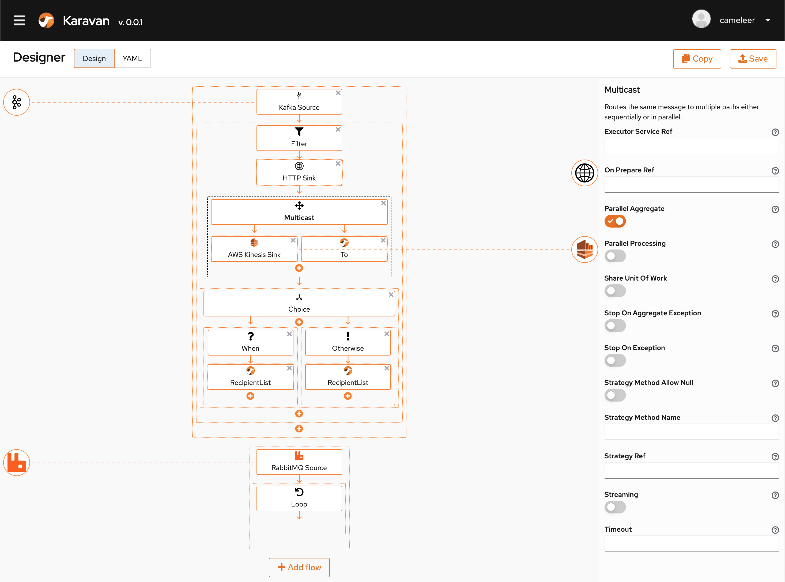

Apache Camel is a project in constant transformation. Anyone knows that Camel has been able to adapt to any new kinds of protocols and systems that have emerged in the past 15 years. But it’s not only that: Camel is also able to adapt to any new ways of dealing with integration problems in the cloud era. While Camel K represented a fundamental shift towards a new approach to cloud-native integration, “Kamelets” are driving a deeper transformation towards “low code” development.
When I talk about “low code”, I refer to a platform for developers where you can achieve most of your goals without writing any code. But at the same time, a low code platform should be customizable enough to let you show your development skills when it’s time to solve critical issues. It needs to be abstract in order to easily deal with the most common problems, even using a UI. But it should not prevent a developer to play with the low level details in order to extend the capabilities of the platform itself.
If you’re a bit familiar with how Kamelets work, I think you’ve already got my point here.
Bindings and Karavans
It’s really easy to use Kamelets, especially in combination with Camel K. I’ve shown in a recent presentation at ApacheCon @Home that moving data from Knative or Kafka into an S3 bucket using streaming upload is as simple as writing something like this:
apiVersion: camel.apache.org/v1alpha1
kind: KameletBinding
metadata:
name: events-to-s3
spec:
source:
ref:
apiVersion: messaging.knative.dev/v1
kind: Channel
name: messages
# Or a Strimzi "KafkaTopic", if you prefer
sink:
ref:
kind: Kamelet
apiVersion: camel.apache.org/v1alpha1
name: aws-s3-streaming-upload-sink
properties:
bucketNameOrArn: "my-bucket"
accessKey: "<your-key>"
# ...
(source, S3 Kamelet Documentation)
You write this file, apply it to a Kubernetes cluster where Camel K is installed: done!
And it’s completely declarative. You just specify where you want to move data from and to: no need to care about lower level details.
If writing YAML is not your favourite sport, you can also opt for a visual UI. I’ve shown in the previous video how the OpenShift dev console is already instructed to use Kamelets in combination with Knative. But there’s a new project in the horizon at Apache that will bring this model even further…
Karavan is a new project started at Apache by Marat Gubaidullin. It is a generic visual UI that can design integrations based on Kamelets. If you either need to create a simple source/sink integration or a more complex one, Karavan can help designing it with ease. There’s also a blog post about Karavan if you want to learn more.

After you finish to configure the integration, the output you get from the UI is an Integration custom resource, that you can direcly apply to any Kubernetes cluster (having Camel K installed) and it will automatically run.
We have now a wider catalog of Kamelets available upstream and it will cover many use cases that you may have in mind. They are the building blocks for letting you connect systems without writing any code: just choose if you want to use the YAML configuration or let the Karavan UI create it for you.
Where’s my Kamelet?
There’s no doubt you’ll find a use case which is not covered by a Kamelet. For example, what about moving data between parts of your organization?
In traditional Camel the approach you would have taken to address this problem is to create one or more ad hoc integrations to fullfill any of your needs. You’d develop a custom integration route for each use case you have in mind.
The Kamelet approach is completely different. You develop a reusable Kamelet that is responsible of taking specific data out of your system (a source), or putting some data back into your system (a sink). Once you’ve done that, you can treat it as a high level connector in the Karavan UI and use it, whenever you need, in multiple scenarios where you need to move data around, without having to code everything from scratch each time.
Writing a Kamelet is easy, much easier than writing a Camel component, if you’ve ever tried doing so. Check it out on the official documentation online.
We know that creating a source or a sink and also doing it right may be difficult (integration is hard, that’s why we have Apache Camel) and involve multiple enterprise integration patterns.
When writing a new Kamelet, you can use plain YAML to describe a route template, add Java (or Groovy, or …) code snippets if you need them, or also link an external Maven project in case you want to add a more complex behavior to it (we did it in the camel-kamelets repository, where we build the default catalog of Kamelets).
What does not change is that, once a Kamelet is written, the logic inside it is well encapsulated and you can treat it as any other connector, in a Binding or in the Karavan UI.
A Kamelet is then the element that enables low code development: it’s easy to configure and embeddable in any UI (such as we’ve done in Karavan), and allows you to fully customize its behavior, even writing various degrees of custom code, up to the lowest level elements of a Camel integration route.
Where to go next
Check out the Karavan repository, where you can build an run the Karavan designer. There’s also a VSCode extension that will let you design integrations directly from the IDE.
Then start playing with Karavan in combination with Camel K and the Kamelet catalog.
We’d love to hear your feedback!
This post originally appeared in the author’s blog